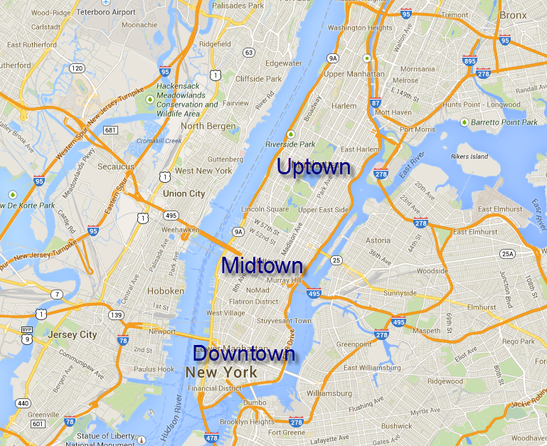
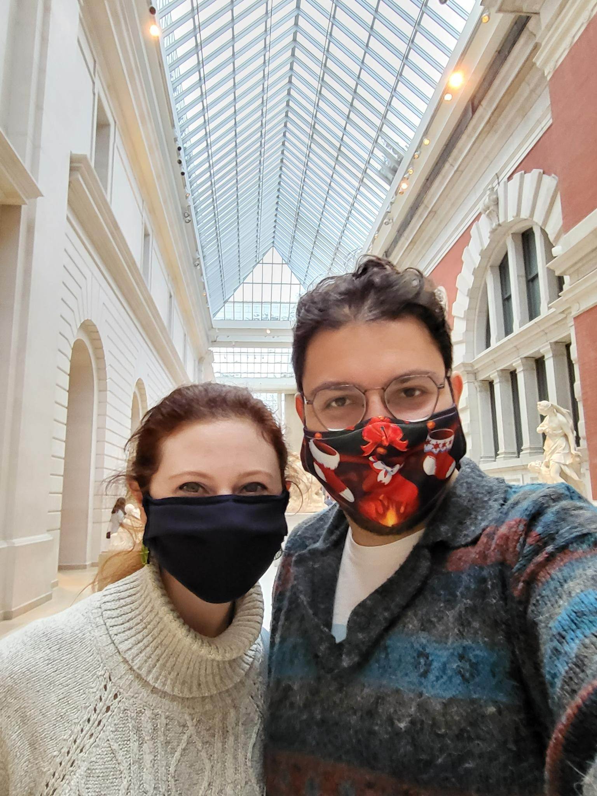
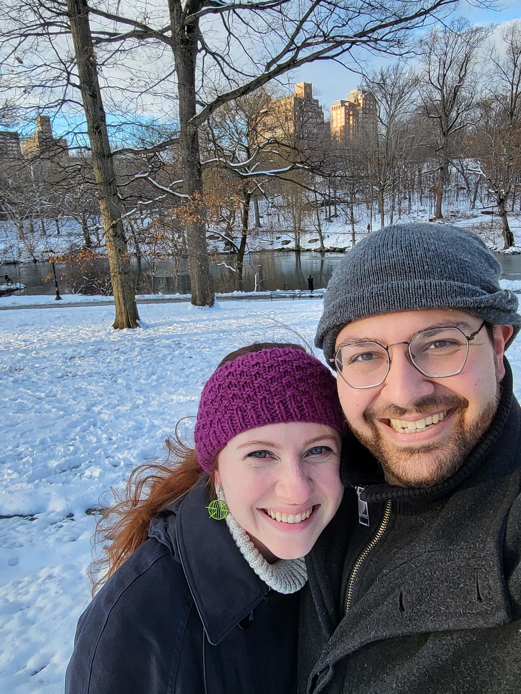

It is a miracle that New York works at all. The whole thing is implausible.
E.B. White
A New York Wedding
We love New York. Getting married here is about convenience, but it's also about hoping to show the people we love (that's you!) something of the life we've chosen for ourselves. We hope that whether it's your first time or you've lived here for decades, you'll take a moment to enjoy the city the way we do. As such, this is perhaps not the definitive list of tourist attractions. Consider this instead a Sasha-and-Kirsten themed buffet of things to try, do, or experience.
What's a Borough?
New York is a weird city, sitting at the intersetion of 3 states, multiple rivers, a tidal inlet, and a dozen or more islands. The city is officially broken up into 5 boroughs: Manhattan, Brooklyn, Queens, The Bronx, and Staten Island. Each is unique and wonderful in its own right, but we imagine that the majority of you will spend your time in Manhattan and Brooklyn. Manhattan, which is itself an island, is "The City". Brooklyn is where we live and where the wedding will be.
New York is a very walkable, bikeable, and subway-able city. That being said, what you stay near is what you'll end up doing. If you are looking for a calmer trip, or you're coming in for a short while, staying near the venue in Greenpoint or Williamsburg might suit you well. These are the definition of hipster areas, with a huge assortment of tiny, weird restaurants and store. We live in Fort Greene, right next to downtown Brooklyn, which are very well-connected areas that offer access to a lot of parks, fun bike trails, and subway connections into Manhattan.
If you have a longer trip or you want a quintessential NYC experience, we'd recommend staying in Manhattan. Where exactly sort of depends on your mood. Manhattan is a long, skinny island, with wide avenues running north-south and smaller streets running east-west. The lines are a little blurry, but we generally split it into Downtown (South of 30th street), Midtown (north of 30th, south of 60th), and Uptown (north of 60th). Central Park, which runs from 59th to 110th, is the unofficial dividing line of what I'll call Really Uptown, which is Harlem, Spanish Harlem, and above.
So what's the difference? Uptown is older and more established. It's generally more residential and has amazing access to the Met, the Natural History Museum, and Central Park and everything it contains. Midtown is the densest part of the city. This is Times Square, this is Broadway, this is Park Avenue. It's connected to everything. Downtown is a little stranger - it's a bunch of really different neighborhoods.The Financial District is a recently more lively area with great parks and ferry connections, which are a real treat. Greenwich Village (or the West Village) is a combination of NYU college kids, old school Italian bistros that you're virtually guaranteed to see a celebrity at, and endless places to get a glass of wine. Basically, Downtown is the college dorm approach to neighborhoods - you walk into a different door, you get a different experience.
What to Do
Overwhelmed yet? Good. If you know what you want to do, do it. If you want to visit the Met, see a Broadway show, or visit Ellis Island, we're not going to try to convince you otherwise. You should! If you're at a bit of a loss, here are some suggestions, but we will gladly talk your ear off if you have more specific requests.
Museums, Museums, and More Museums
The Metropolitan Museum of Art is the largest art museum in the US, and the 4th largest in the world. It's humongous. You could spend a week and barely scratch the surface. Would very highly recommend the Temple of Dendur, a complete ancient Egyptian temple, gifted to the US by Egypt in the 60s. The hall of Arms and Armor may be of particular interest if you have kids, but really you should walk in, pick an area or two and wander.
Altenatively, check out the Cooper Hewitt Museum, which is much smaller, much more manageable, and Sasha's favorite museum in the city. It is a museum of decorative arts, dedicated to design and aesthetics. What's really wonderful about it is the layout - the first floor is a rotating exhibit space, the second floor is exclusively items from the original collection of the two Hewitt sisters that founded the museum, and the third floor is devoted to contemporary and immersive design, with a lot of modern, computer assisted design work.
Really recommend DTUT, a coffee shop that acts a music venue in the evenings, for a cup of coffee. Not done? Wander into Central Park and check out Belvedere Castle, or stumble into Strawberry Fields, which is practically guaranteed to have some random guy with a guitar playing a Beatles song. For more museuming, MoMA and the Guggenheim are just around the corner.
The Tourist Trap
The best views of the Statue of Liberty are, well-known secret, from the totally free Staten Island ferry. You walk in, you get on the boat, you ooh and aah about the statue, you wait for the next boat back and you do the ooh'ing and aah'ing again. Or, you can come hang out with us at Brooklyn Bridge Pier Parks on Saturday (check Details for details). Times Square: do it after dark, because it's just something. If you want the best views of the city, walking over the Brooklyn Bridge is really fun, but the panorama shot is from NJ. You can either take the ferry to Weehawken or the PATH train (pay with metro card or buy tickets at the station) to Hoboken. Both towns have a lovely boardwalk.
In the daytime, check out the New York Public Library in Bryant Park, visit Rockefeller Center, and stroll north up Fifth Avenue into Central Park. You can check out the zoo if you like, or just wander around and get lost. Heading west, the Intrepid is really neat if you're into war planes, and if you're not, take a walk or a very pleasant bike down the Hudson River Park path. Cross in around 30th and climb the High Line, a converted elevated rail line that is now a pedestrian path. Get off around 14th street and cross in a little to Chama Mama, a Georgian restaurant we've taken everyone we can convince to. Union Square is fun, especially on days when the farmer's market is up, but the real highlight is the Strand, an ubelievable book store. For a real treat, take the elevator all the way to the rare books room.
The Eat and Drink
Our favorite NY slice is from Pizza Suprema. Our favorite bagel is either from Brooklyn Bagel Company (ironically in Manhattan) where you have to ask to put a hash brown in your bagel, or a fancy sandwich from Tompkins Square. For bagels, expect a line on weekends. Our favorite pastry is from Le Petit Monstre, which you can get if you join us on Saturday. If you pass a Maison Kayser, that's the same chain of Parisian bakeries Sasha went to when studying abroad. There are a number of vegan restaurants owned by a company called Overthrow, all near Tompkins Square Park, all are great. For the best vegan friendly Italian Italian, check out Gnocco, also near there. For the best American Italian, where large men pour you even larger glasses of cheap red wine, check out John's of 12th street. Our favorite falafel is Taim when we're sober and Halal Guys when we're drunk. If you want the most hipster experience possible, check out Public Records. The best vegan Mexican is the nachos from JaJaJa. Their cocktails are nothing to sneeze at either.
McSorley's is a bar so old, they had to be legally forced to allow women in, where you can get beer only in light or dark, and the floor has sawdust. Peculier Pub in the village is the diviest dive with the most impressive beer selection. DSK in Brooklyn is a German beer hall with multiple vegan and non-vegan wurst options; Black Forest and Reichenbach are slightly less vegan friendly but also wonderful. Threes Brewing is Sasha's favorite brewery to hang out and grab a beer. Any Irish pub in or around Times Square will be surprisingly good. Sunny's in Red Hook, is a bar that appears in the movie Hearts Beat Loud, where it is owned by Ted Danson. It may as well actually be owned by him, because it's the epitome of neighborhood dives.
I Want To Bike
The best bike paths, by far, are in Central Park (the full loop is 6.1 miles, but there are shortcuts to make it less) and on the Hudson River Path (About 15 miles, uninterrupted the entire length of the island). To continue the trip, take either the Brooklyn Bridge or Manhattan Bridge over to Brooklyn, then coast down to the waterfront. After that, if you head south, the Brooklyn Bridge Pier park becomes a path that takes you to Red Hook. Louis Valentino Park is the awkward corner that is actually the best views of the Statue of Liberty, because you're not on a boat and can spend as much time as you want there. The Key Lime Pie place is surprisingly amazing, as are the local wineries/bars. Don't waste your time on the East Side of Manhattan, the path is constantly interrupted. Almost all marked bike paths on Google Maps are decent, but take it slow and stick to separated paths rather than bike lanes if you haven't biked in city traffic before.
You can rent a bike from a local bike shop, or use CitiBike, which is very usable and has tons of coverage. You can also rent bikes from random guys in Central Park - it's not the worst idea, but don't expect to be setting any records. If you're going to be on a street, wear a helmet. The Central Park loop, the Southern half especially, is a wonderful way to see the park, a very wide bike path, and very friendly even if you've never biked in a city.